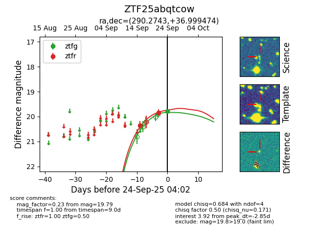
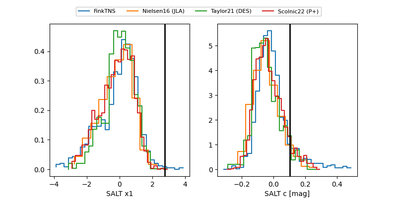

FINK: ZTF25abqtcow
Lasair: ZTF25abqtcow
ALeRCE: ZTF25abqtcow
ZTF25abqtcow (ztf,fink)
equatorial (ra, dec) = (290.2743,+36.99947)
galactic (l, b) = (69.2716,+10.52628)


last ztfg=19.79, ztfr=19.83
1 ztfg, 2 ztfr detections